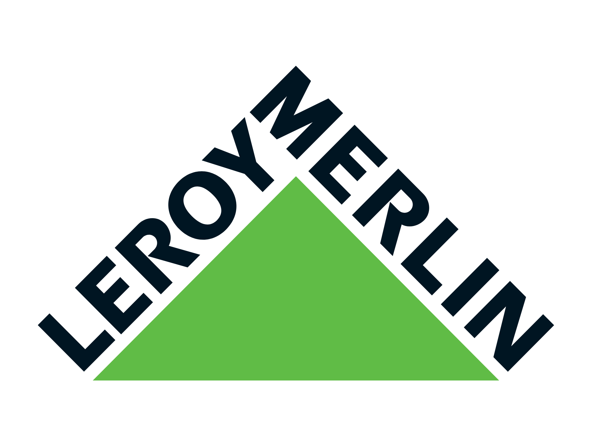

Negociação
Prioridades, compensações, autoridade e escalonamento.
Conteúdo complementar

Negociação · limites da atuação jurídica · assinaturas eletrônicas
Agora no telão
A palestra apresenta contratos como sistemas de decisão: negociar, equilibrar e evidenciar.
conectando em tempo real…Participe
A primeira enquete conecta contratos, Visual Law e governança da decisão.
Envie sua pergunta
Conteúdo essencial
Prioridades, compensações, autoridade e escalonamento.
Estruturação de riscos e decisões comerciais rastreáveis.
Identidade, intenção, integridade, poderes e evidências.
Visual Law na prática


A transformação visual complementa o conteúdo jurídico e facilita a localização de etapas e decisões.
ALL ADEO


A cartilha apresenta informações gerais e não substitui o Estatuto, Contrato e demais documentos oficiais.
Depois da palestra